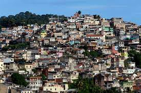

Curiosidades sobre o Rio de Janeiro

O Rio de Janeiro é uma grande cidade brasileira à beira-mar, famosa pelas praias de Copacabana e Ipanema,
pela estátua de 38 metros de altura do Cristo Redentor, no topo do Corcovado,
e pelo Pão de Açúcar, um pico de granito com teleféricos até seu cume.
A cidade também é conhecida pelas grandes favelas. O empolgante Carnaval,
com carros alegóricos, fantasias extravagantes e sambistas, é considerado o maior do mundo.
Fundação: 1 de março de 1565
População: 6,748 milhões (2020)
Código de área: 21
População metropolitana: 12.280.702
Prefeito: Eduardo Paes
Favelas

As favelas na cidade do Rio de Janeiro começaram a ter início no final do século XIX,
quando várias transformações sócioeconômicas pelas quais o Brasil passava
e transformações locais começaram a inchar a área central da cidade, formando os primeiros cortiços.